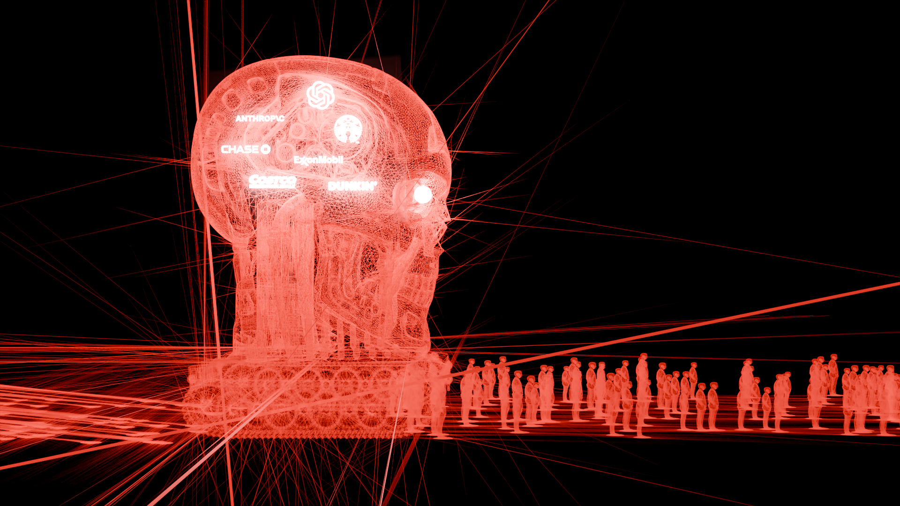
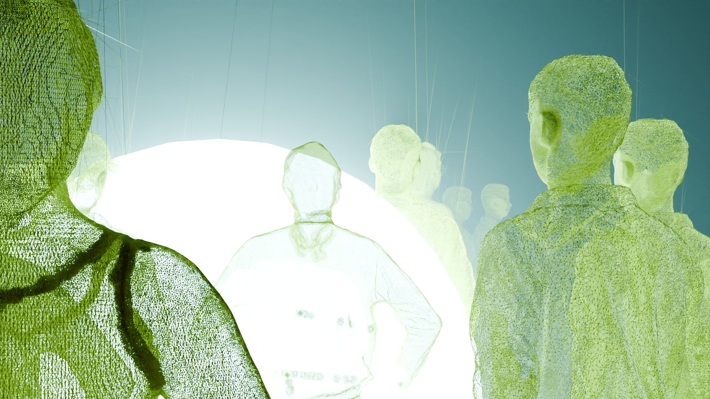

One potential dystopic future we could face is something I like to call the Matrixanator scenario, a mix between the timeless cinematic masterpieces The Matrix and The Terminator, but with a whole lot of mundane reality dumped in to ensure we don’t have too much entertainment. This version of a dystopic future is marked by a completely docile population, ruled by a small number of neo-feudal tech-lords with familiar surnames like Vanderbilt, Rothschild, and Rockefeller, who together through absolute control of all networks and infrastructure control all aspects of human existence.
The few who are physically healthy or strong enough to possibly have agency over their lives will simply be manipulated, gaslit, or extorted into complicity. All of this is, of course, completely without human input because it's been long automated.
An extremely low value will be assigned to proletariat life; entire populations will be marginalized into extinction. Their lives will have so little perceived value that their existence will not be regarded at all by those in power, relegated to ranks deserving less attention than common vermin or bacteria.
Once Earth has been thoroughly drained of any resources considered desirable by those in control it will be abandoned, and our solar system will become a testing ground for greater machines capable of even greater destruction, in search of even greater ROI for the shareholders.

A utopia can be challenging to imagine because it must be a utopia for everyone, and people are sometimes pleased by opposing actions. So a utopic future might be a bit tame compared to the extremes of a dystopic one.
Social cohesion is at the forefront of this society; decisions are made based on who they affect and how they affect them, and the general mindset of individuals is to “always leave a place better than when you arrived.” Information access is universal, there are no classified documents or top-secret research because everything done by humans is done in pursuit of bettering the lives of all earthlings, or possibly all life in the universe.
There are no homeless people, though many do choose to live and sleep outside; they do so willingly, safely, and in a way that is congruent with nature and their health. Of course, bad things do still happen, but we are better situated to handle them. Like a little salt on chocolate, the bad only elevates the good.
Technology is used for the betterment of all life. Automation replaces undesirable jobs, and nobody is required to perform a duty they do not choose. There are no castes, no beasts of burden, and there is no currency.
In likelihood we will arrive at some state between these two fictions. The majority of people will continue to avoid living a meaningful life. With their ambitions hijacked by corporate interests, they’ll be used as mascots for conduct beholden to a good citizen. The same dutiful mantra that echoes in the airwaves today will be bellowed from seemingly every surface in public: "BUY, DISPOSE, REPEAT". It becomes the sircadian rhythm of life: "BUY, DISPOSE, REPEAT". We beg for more: "BUY, DISPOSE, REPEAT".
We keep doing this until the world reaches a critical mass of suffering, and the system breaks. This will be very upsetting for the world as a whole, but will ultimately usher in a new era of reform where our interests, ethics, and conduct change drastically in favor of more social behavior. Goods, services, and commodities are priced fairly. The social safety net is expanded. New advances in medical technology temper the effects of aging. Taxes reach 95%.
Two generations later, the people have forgotten what they had fought for, the social safety net is removed, and the cycle begins again. Humanity claims a tiny net gain, though no progress is actually made; for to measure progress one needs to have an intended goal. Earth grows ever closer to the volcanic belch that will render it uninhabitable for humanity, and humanity is consumed by the light of its own potential.

I think I went the direction I did for the dystopic future because I have been heavily influenced by literature and cinema. Aldous Huxley, George Orwell, and Ray Bradbury are among some of my favorite authors, and I spent almost a decade working in video rental stores, so my exposure to post-apocalyptic dystopian futurism is substantial. If we continue doing what we’re doing now I think we will get there given a long enough timeline. Of course humanity’s trajectory is never linear, so we will not arrive at this fearful fiction.
The utopia is essentially an extrapolation of what I find to be positive human traits, like curiosity and empathy. I believe a necessary part of empathy is experiencing hardships, so I wanted to include that humanity handles them gracefully in a utopia. Curiosity without bounds would certainly require a lot of knowhow, so I wanted to make sure that there are no barriers to knowledge.
Finally, I modeled a more realistic future based on my feeling that for as much as things change in the world, everything is still the same, and history feels cyclical. No system can sustain limitless growth, so things necessarily must break from time to time. If we graphed history into the future, it would resemble a sine wave with an ever-increasing amplitude and frequency.